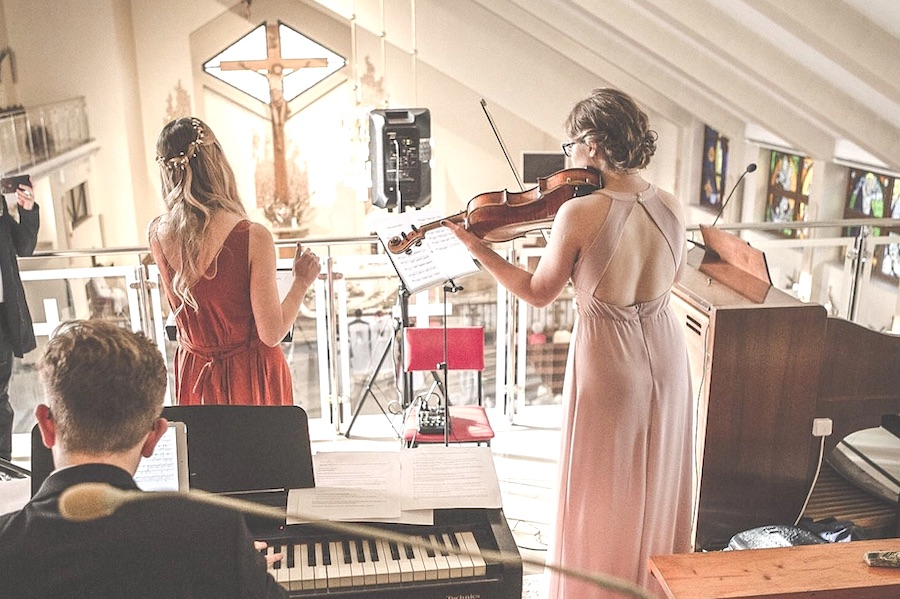

Oferuję oprawę muzyczną ślubu w kościele, lub w innym, wymarzonym miejscu. Śpiewam utwory religijne, klasyczne, popularne. Posiadam bogaty repertuar i kilkanaście lat doświadczenia na scenie. Podczas Waszego ślubu możecie usłyszeć pięknie wykonane utwory, z profesjonalną aranżacją i nagłośnieniem. Śpiewam z akompaniamentem własnym oraz z organistą. Współpracuję także z wieloma muzykami. Forma występu może być dostoswana do Waszych potrzeb. Oprawa muzyczna, którą przygotowuję, jest dostojna i wzruszająca. Z pewnością niejedna babcia uroni łezkę. Standardowy skład: Wokal + instrumentarium (podkłady muzyczne) Oferta obejmuje przeprowadzenie próby w kościele, nagłośnienie kościoła oraz muzyczną oprawę mszy podczas ślubu (wokal + instrumentarium). Nagrania, które mogą Państwo usłyszeć na tej stronie, to opcja Wokal + instrumentarium. Instrumentarium to wysokiej jakości podkłady muzyczne.
Współpracuję również z innymi muzykami i na Państwa życzenie występ można wzbogacić o organistę lub skrzypaczkę.
A także stałe części mszy, tj.
Święty, święty, Psalm, Hymn do Ducha Świętego, Baranku Boży i inne, oraz wszystkie odpowiedzi w czasie Mszy świętej.
W okresie świąt wykonuję również kolędy i utowry świąteczne.
Więcej informacji dotyczących oferty oraz pełen repertuar, uzyskają Państwo, pisząc na adres mailowy: oprawamuzycznaspiew@gmail.com